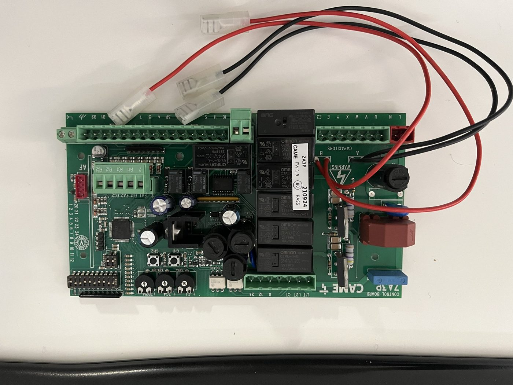
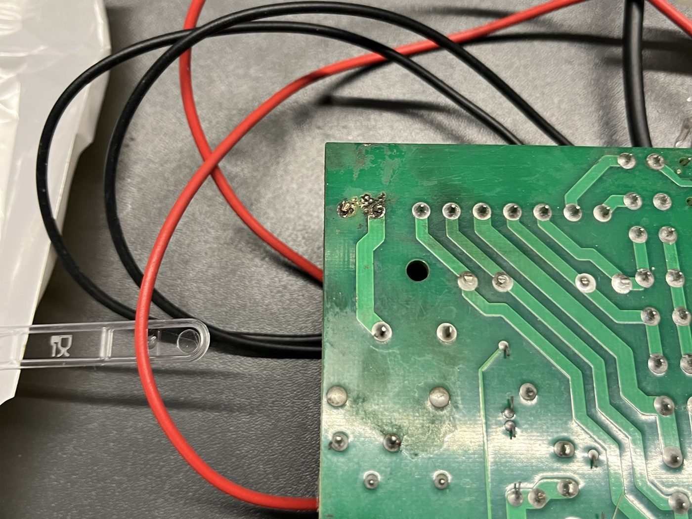
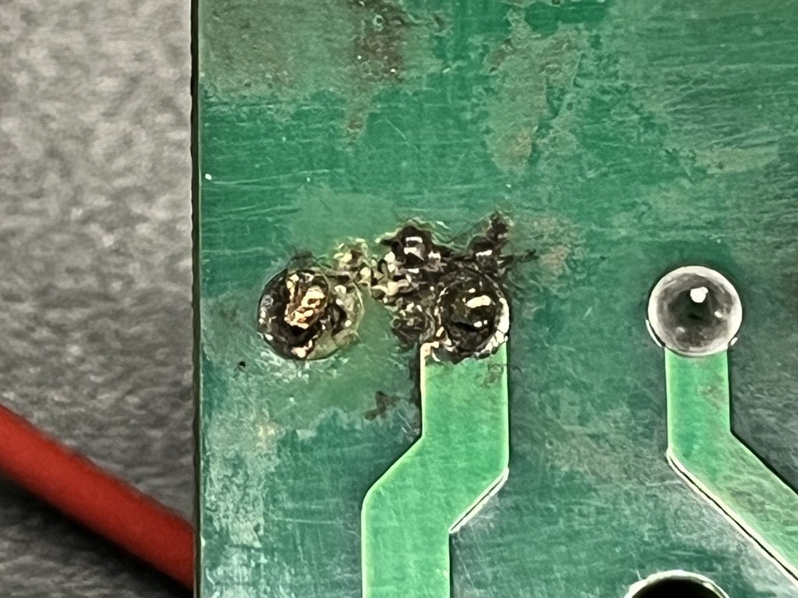
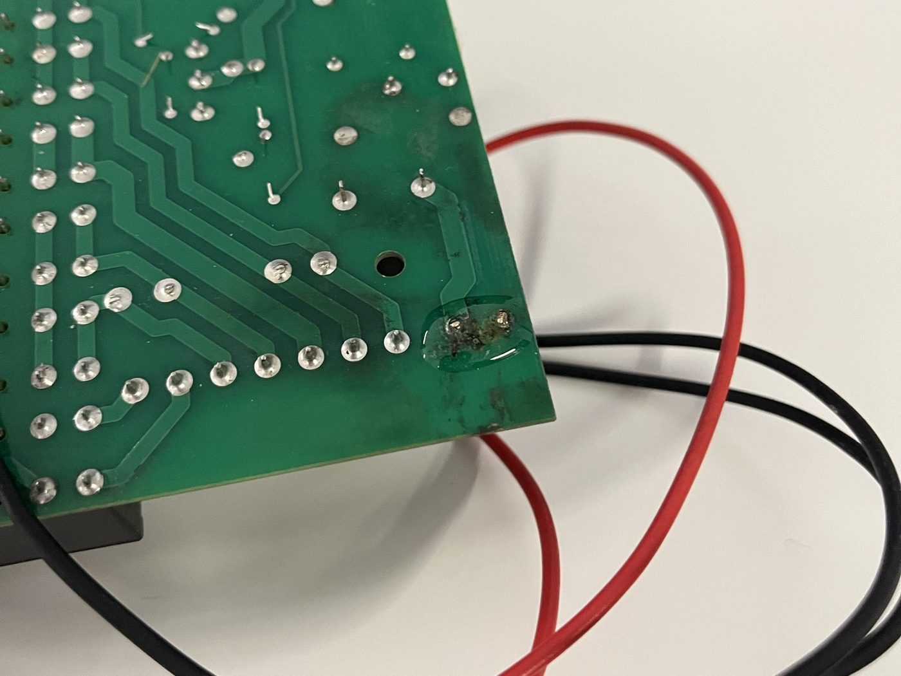

Bozza. Le parti evidenziate sono da compilare con i dati reali della riparazione.
Scheda n. 0002
Questo oggetto è stato riparato a mano invece di essere sostituito. Qui c’è scritto cosa aveva, cosa è stato fatto e da chi.
Due o tre frasi: di chi è, da quanto tempo lo usa, perché valeva la pena provarci invece di sostituirlo.
Una lucertola è entrata nel quadro dell’apricancello. Da allora l’interruttore differenziale scattava e il cancello non funzionava più.
La lucertola è rimasta folgorata sul lato saldature della scheda. I residui facevano da ponte tra due piazzole e mettevano in corto l’alimentazione. In quel punto la scarica ha rovinato il circuito stampato.
Abbiamo tolto i residui e pulito la zona. Dove il circuito stampato era rovinato dalla scarica abbiamo messo una goccia di resina, per ripristinare l’isolamento.
Prima della pulizia il multimetro misurava 50 kΩ tra le due piazzole, dopo misura circuito aperto. Abbiamo poi ridato tensione per gradi: prima con una lampadina in serie alla fase, che limita la corrente se l’isolamento cede, poi direttamente dalla rete per 20 minuti. Il differenziale non è più scattato.
Nessun componente sostituito. Materiale usato: resina isolante.
Non abbiamo misurato l’isolamento a 500 V con un megaohmmetro: la tenuta è stata verificata solo con il multimetro e con la prova sotto tensione. Sul circuito stampato resta il segno della scarica, coperto dalla resina.
Il passaggio da cui è entrata la lucertola va chiuso quando si rimonta il quadro, altrimenti il guasto può ripetersi.
Questa è una riparazione volontaria e gratuita, fatta con cura ma senza garanzia. Se l’oggetto smette di funzionare, la scheda aiuta chi ci metterà mano dopo di noi.




Il peso è quello dell’oggetto, misurato. Le emissioni sono una stima calcolata con il metodo del Fixometer di The Restart Project, non una misura.
Il codice porta a questa pagina. Il numero è scritto anche in chiaro, così la scheda si trova pure se il codice si rovina.
Gli stessi dati in formato Open Repair Data Standard, per chi studia la riparabilità dei prodotti.
{
"id": "0002",
"data_provider": "12042",
"country": "ITA",
"partner_product_category": "Apricancello (scheda di comando)",
"product_category": "DA COMPILARE (dall’elenco ORDS)",
"brand": "CAME",
"year_of_manufacture": "DA COMPILARE",
"problem": "Lucertola entrata nel quadro e folgorata sulla scheda: residui in corto sull’alimentazione, scatta il differenziale.",
"repair_status": "Fixed",
"repair_barrier_if_end_of_life": "",
"group_identifier": "12042-bra",
"event_date": "2026-11-24"
}